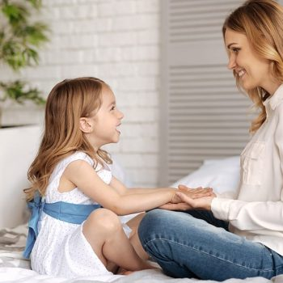
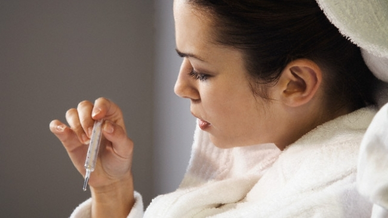

Virginia Henderson (30 noiembrie 1897 – 19 martie 1996) a fost o persoană care a influențat major nursingul, cercetător, teoretician și autor. Este numită “prima doamnă a nursingului”.Conceptul de nursing al Virginiei Henderson are la bază 14 nevoi fundamentale, cu componentele bio-psiho-sociale, și culturale ale individului. Conform acesteia, asistenta medicală trebuie să aibă ca și țel al profesiei, atingerea de către pacient a independenței acestor nevoi principale.
Nevoia de a comunica
Necesitatea de a schimba informaţii cu semenii printr-un proces dinamic verbal şi nonverbal. Asistenta trebuie să supravegheze bolnavul, să observe faciesul, starea acestuia, modul în care comunică și cât comunică.
Nevoia de a se misca si a avea o buna postura
Necesitatea de a fi în mişcare, de a se mobiliza, de a păstra anumite poziţii. Pentru atingerea gradului de independență al acestei nevoi, asistenta trebuie să observe poziția pacientului și să îl mobilizeze.
Nevoia de a fi curat ingrijit si de a proteja tegumentele si mucoasele
Necesitatea de a menţine o ţinută decentă, piele curată, sănătoasă. Pacientul trebuie să aibă lenjerie curată de pat, să asigure igiena, să i se îngrijească plăgile și să se prevină apariția escarelor de decubit.
Nevoia de a se imbraca si dezbraca

Necesitatea de a purta haine adecvate. Asistenta trebuie să acorde ajutor pacientului pentru a se îmbrăca și dezbrăca.
Nevoia de a respira si a avea o circulatie adecvata

Captarea oxigenului din mediu extern, necesar proceselor de oxidare din organism, şi de a elimina bioxidul de carbon rezultat din arderi celulare.
Nevoia de a mentine temperatura corpului in limitele normei
Necesitatea de a menţine temperatura corpului la valori normale, constante.
Nevoia de a manca si a bea

Necesitatea de a ingera şi absorbi alimente de bună calitate şi în cantitate suficientă. Asistenta trebuie să observe apetitul pacientului, să îl alimenteze activ sau pasiv și să calculeze rația alimentară.
Nevoia de a elimina
Necesitatea de a elimina substanţele nefolositoare, vătămătoare, rezultate din metabolism. Asistenta trebuie să măsoare și să noteze diureza, expectorația, vărsăturile, scaunele. Ea trebuie să facă bilanțul hidric.
Nevoia de a evita pericolele
Necesitatea de a fi protejat contra agresiunilor interne sau externe, pentru menţinerea integrităţii sale fizice şi psihice. Asistenta trebuie să asigure un cadru sigur din punct de vedere psihic, să respecte cu strictețe normele de asepsie, antisepsie, sterilitate.
Nevoia de a dormi si a se odihni
Necesitatea de a se odihni timp suficient, în bune condiţii. Asistenta trebuie să asigure bolnavului un cadru de relaxare, unde să poate să aiba un somn de calitate și odihnitor. Ea trebuie să învețe pacientul cu probleme în această nevoie, metode de odihnă și de relaxare.
Nevoia de a actiona conform propriilor convingeri si valori

Necesitatea individului de a face sau exprima gesturi, acte, conform formaţiei sale, de bine şi de rău, de dreptate, în virtutea unei ideologii.Respectarea oricărei credințe, religii, valori.
Nevoia de a fi util si a se autorealiza
Nevoia de a înfăptui activități utile zilnice.
Nevia de a se recrea
Necesitatea de a se destinde, de a se distra, recurgând la activităţi agreabile, pentru relaxare fizică şi psihică. Pentru independența acestei nevoie este necesară integritatea fizică și psihică și atingerea acestui scop.
Nevoia de a invata
Necesitatea de a acumula cunoştinţe, atitudini şi deprinderi pentru modificarea comportamentului sau adoptarea de noi comportamente, în scopul redobândirii sănătăţii sau menţinerii ei.